Spatial Data
Physical World → GIS World

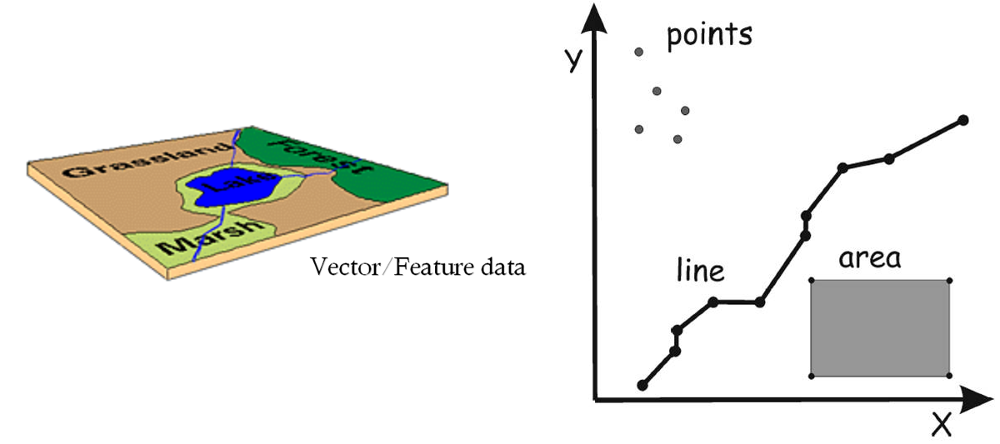
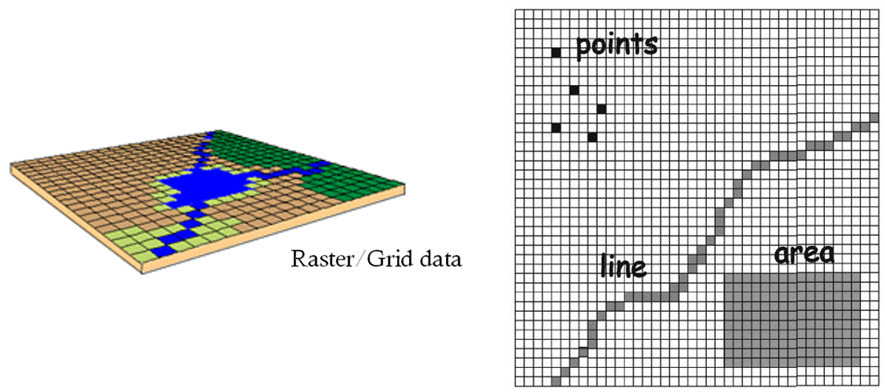
R has two object types for handling tabular data: matrices and data frames.
head(airquality)## Ozone Solar.R Wind Temp Month Day
## 1 41 190 7.4 67 5 1
## 2 36 118 8.0 72 5 2
## 3 12 149 12.6 74 5 3
## 4 18 313 11.5 62 5 4
## 5 NA NA 14.3 56 5 5
## 6 28 NA 14.9 66 5 6There are number of sample datasets that come with R, many of which are data frames. Functions to explore data frames include names(), head(), nrow(), ncol(), dim().
#View(mtcars)
names(mtcars)## [1] "mpg" "cyl" "disp" "hp" "drat" "wt" "qsec" "vs" "am" "gear"
## [11] "carb"head(mtcars)## mpg cyl disp hp drat wt qsec vs am gear carb
## Mazda RX4 21.0 6 160 110 3.90 2.620 16.46 0 1 4 4
## Mazda RX4 Wag 21.0 6 160 110 3.90 2.875 17.02 0 1 4 4
## Datsun 710 22.8 4 108 93 3.85 2.320 18.61 1 1 4 1
## Hornet 4 Drive 21.4 6 258 110 3.08 3.215 19.44 1 0 3 1
## Hornet Sportabout 18.7 8 360 175 3.15 3.440 17.02 0 0 3 2
## Valiant 18.1 6 225 105 2.76 3.460 20.22 1 0 3 1nrow(mtcars)## [1] 32ncol(mtcars)## [1] 11You can grab an individual column by name with the $ selector.
summary(mtcars$wt)## Min. 1st Qu. Median Mean 3rd Qu. Max.
## 1.513 2.581 3.325 3.217 3.610 5.424plot(x=mtcars$wt, y=mtcars$mpg, pch=16, main="Gas Mileage vs Weight")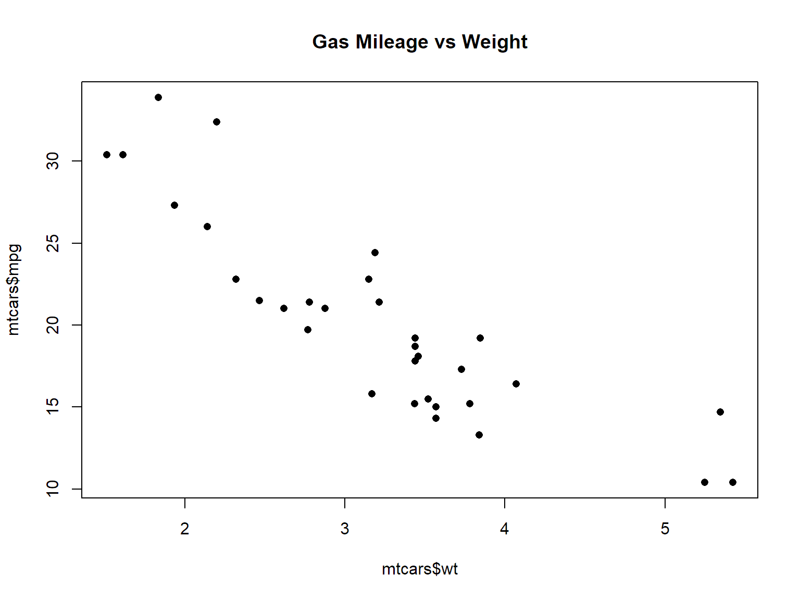
You can reference specific rows specific rows and columns with square bracket notation. Only this time we need two expressions separated by a comma.
mydataframe[ rows , cols ]
The expression for rows & cols can be integers (row and column indices), or Booleans. In addition, with data frames you can use a vector of column names to specific the columns. To return all the rows or all the columns, omit the expression.
library(maps)
data(canada.cities)
head(canada.cities)## name country.etc pop lat long capital
## 1 Abbotsford BC BC 157795 49.06 -122.30 0
## 2 Acton ON ON 8308 43.63 -80.03 0
## 3 Acton Vale QC QC 5153 45.63 -72.57 0
## 4 Airdrie AB AB 25863 51.30 -114.02 0
## 5 Aklavik NT NT 643 68.22 -135.00 0
## 6 Albanel QC QC 1090 48.87 -72.42 0Columns can be specified either by name or index number. The following two expressions are equivalent (note how the expression for rows has been omitted, so all rows are returned).
head(canada.cities[,1])## [1] "Abbotsford BC" "Acton ON" "Acton Vale QC" "Airdrie AB"
## [5] "Aklavik NT" "Albanel QC"head(canada.cities[,"name"])## [1] "Abbotsford BC" "Acton ON" "Acton Vale QC" "Airdrie AB"
## [5] "Aklavik NT" "Albanel QC"The rows expression can also be an expression that returns logicals.
idx <- (canada.cities$pop > 100000)
table(idx)## idx
## FALSE TRUE
## 887 29big_cities <- canada.cities[idx, ]
plot(big_cities[ , c("long","lat")], asp=1, pch=16 )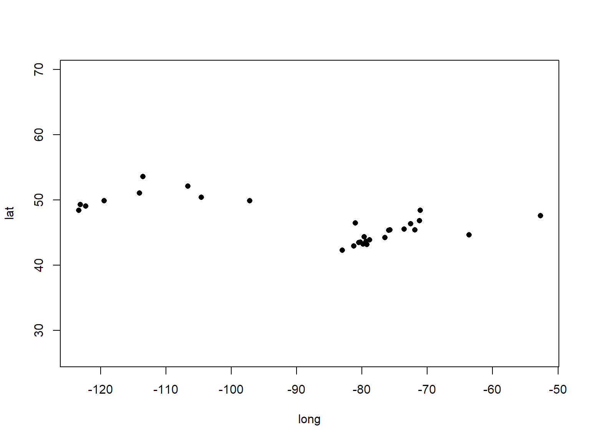
Before importing or exporting data, you should set the working directory.
setwd("C:/.../.../data)You can also set the working directory in RStudio from the Session menu
RStudio has a 'import dataset' tool in the upper right pane.
evict_df = read.csv("./data/Eviction_Notices.csv")How would you represent each of the following?
sp packagesp packageVector data classes
SpatialPoints, SpatialPointsDataFrame
SpatialLines, SpatialLinesDataFrame
SpatialPolygons, SpatialPolygonsDataFrame
Raster classes
SpatialPixels
SpatialGrid
To see all data classes that inherit from 'Spatial', run getClass('Spatial')
SpatialPoints
Structure of Spatial* Objects
sp package store projection inforgdal, raster, and maptools packages read projection infoCRS() is used to specify the parameters of a project system, you can also 'lookup' a projection system using an id numberThe CRS() function uses the PROJ.4 library, which has at least three ways to specify a projections:
library(sp)
prj1 <- CRS("+proj=utm +zone=17 +datum=WGS84")
prj2 <- CRS("+init=epsg:3358")
prj3 <- CRS("+init=ESRI:102719")The one-stop shop for finding proj4 strings and epsg/ESRI id numbers is http://www.spatialreference.org. (Google usually works also.
Even though geographic coordinates (latitude-longitude) are not projected, it is still a coordinate reference system.
## The following are equivalent
latlong1_crs <- CRS("+proj=longlat +datum=WGS84")
latlong2_crs <- CRS("+init=epsg:4326")Universal Transverse Mercator is a popular projection system that like all conformal Mercator projections preserves angles. It divides the world into 36 zones of 6 degrees each, so you need to know which zone your areas falls in. Areas below the equator can also be flagged with +south which will add an offset so y values are positive. It works well for areas the size of a county or smaller. Units are meters.
library(sp)
utm10n <- CRS("+proj=utm +zone=10 +datum=WGS84")Another common projection system is Web Mercator. Web Mercator is used by many popular mapping platforms, such as Google Maps, Bing, and Open Street Map. Web mapping packages such as leaflet and ggmap will typically project lat-long data into WebMercator on the fly, but if you ever need to project data into Web Mercator its EPSG number is 3857.
webmercator_crs <- CRS("+init=epsg:3857")For more info, see: Coordinate Reference Systems in R (cheat sheet)
The majority of spatial data file formats save the projection information as part of the file(s). As we saw last time, this includes Shapefiles that we can import using the rgdal package.
library(rgdal)
ca_counties <- readOGR(dsn="./data", layer="ca_counties_census", verbose=FALSE)## Warning in readOGR(dsn = "./data", layer = "ca_counties_census", verbose =
## FALSE): Z-dimension discardedplot(ca_counties, axes=TRUE)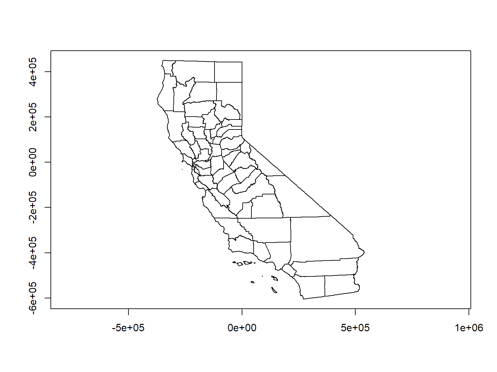
All data classes from the sp and raster packages have a proj4string slot
ca_counties@proj4string## CRS arguments:
## +proj=aea +lat_1=34 +lat_2=40.5 +lat_0=0 +lon_0=-120 +x_0=0
## +y_0=-4000000 +datum=NAD83 +units=m +no_defs +ellps=GRS80
## +towgs84=0,0,0Challenge question: What projection system is this? [Ans].
This is California Teale Albers NAD83 (if you figured that out you're truly a geo-geek).
You can also get or set the CRS info using the proj4string() function
proj4string(ca_counties)## [1] "+proj=aea +lat_1=34 +lat_2=40.5 +lat_0=0 +lon_0=-120 +x_0=0 +y_0=-4000000 +datum=NAD83 +units=m +no_defs +ellps=GRS80 +towgs84=0,0,0"Both of these methods can be used to read or write the CRS info, However this only telling R how your data are saved, it is not actually projecting anything (that's next!)
spTransform() is your go-to function for projecting and transformingLet's 'unproject' the CA Counties back to geographic coordinates.
latlong_crs <- CRS("+proj=longlat +datum=WGS84")
ca_counties_ll <- spTransform(ca_counties, latlong_crs)
plot(ca_counties_ll, axes=TRUE)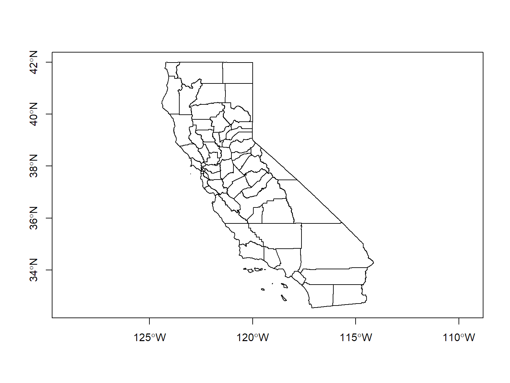
We can create a SpatialPoints object by passing a two-column data frame or matrix containing the x and y coordinates to the SpatialPoints() function.
To illustrate, let's grab the us.cities data frame (cities with pop > 40k), which is bundled with the maps package. Next we'll extract just the cities in California.
library(maps)
head(us.cities)## name country.etc pop lat long capital
## 1 Abilene TX TX 113888 32.45 -99.74 0
## 2 Akron OH OH 206634 41.08 -81.52 0
## 3 Alameda CA CA 70069 37.77 -122.26 0
## 4 Albany GA GA 75510 31.58 -84.18 0
## 5 Albany NY NY 93576 42.67 -73.80 2
## 6 Albany OR OR 45535 44.62 -123.09 0ca_citiesDF <- us.cities[us.cities$country.etc=="CA", ]
nrow(ca_citiesDF)## [1] 208head(ca_citiesDF)## name country.etc pop lat long capital
## 3 Alameda CA CA 70069 37.77 -122.26 0
## 10 Alhambra CA CA 88857 34.08 -118.13 0
## 11 Aliso Viejo CA CA 41975 33.57 -117.73 0
## 15 Altadena CA CA 43280 34.19 -118.13 0
## 20 Anaheim CA CA 334909 33.84 -117.87 0
## 27 Antioch CA CA 109485 37.99 -121.80 0To turn these into a SpatialPoints object, we need to pass just the columns containing the x and y coordinates to the SpatialPoints() function. In this case, the long column contains the x-coordinates, and the lat column contains the y-coordinates.
ca_citiesSP <- SpatialPoints(ca_citiesDF[ , c("long", "lat")])
summary(ca_citiesSP)## Object of class SpatialPoints
## Coordinates:
## min max
## long -122.70 -116.23
## lat 32.63 40.57
## Is projected: NA
## proj4string : [NA]
## Number of points: 208Note the proj4string is missing. Let's tell R what CRS these points are in before we do anything else.
proj4string(ca_citiesSP) <- CRS("+proj=longlat +datum=WGS84")Now we can plot them on top of the counties.
plot(ca_counties_ll, asp=1, axes=T)
plot(ca_citiesSP, add=TRUE, pch=16, cex=1, col="red")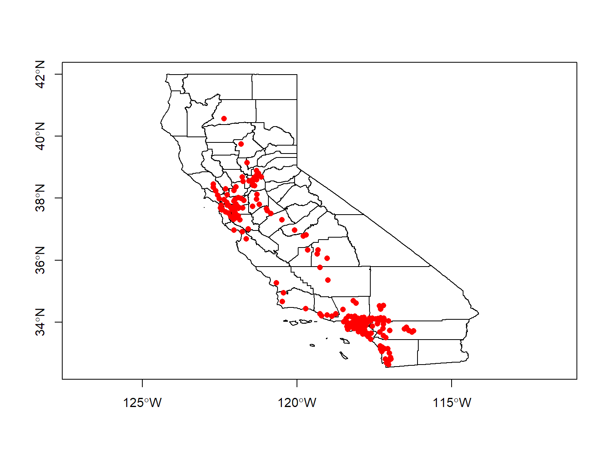
If we want to retain the attribute table (e.g., the name and population of every city), we need to create a SpatialPointsDataFrame. SpatialPointsDataFrame() is pretty similar to its shorter cousin, but also wants you to pass an argument called data with the attribute table (data frame). While we're at it, we can also pass the proj4string argument.
ca_citiesSPDF <- SpatialPointsDataFrame(coords=ca_citiesDF[,c("long","lat")], data=ca_citiesDF, proj4string = CRS("+proj=longlat +datum=WGS84"))
summary(ca_citiesSPDF)## Object of class SpatialPointsDataFrame
## Coordinates:
## min max
## long -122.70 -116.23
## lat 32.63 40.57
## Is projected: FALSE
## proj4string :
## [+proj=longlat +datum=WGS84 +ellps=WGS84 +towgs84=0,0,0]
## Number of points: 208
## Data attributes:
## name country.etc pop lat
## Length:208 Length:208 Min. : 39523 Min. :32.63
## Class :character Class :character 1st Qu.: 53532 1st Qu.:33.89
## Mode :character Mode :character Median : 72444 Median :34.13
## Mean : 128506 Mean :35.43
## 3rd Qu.: 110156 3rd Qu.:37.64
## Max. :3911500 Max. :40.57
## long capital
## Min. :-122.7 Min. :0.000000
## 1st Qu.:-121.5 1st Qu.:0.000000
## Median :-118.2 Median :0.000000
## Mean :-119.3 Mean :0.009615
## 3rd Qu.:-117.8 3rd Qu.:0.000000
## Max. :-116.2 Max. :2.000000Now that we have attributes, we can color the points by population size. First we'll put the population values into 10 'bins' using the cut() function, and then use the bin numbers to assign a color.
pop_deciles <- quantile(ca_citiesSPDF@data$pop, probs = 0:10/10)
pop_bin_factor <- cut(ca_citiesSPDF@data$pop, breaks=pop_deciles)
pop_bin_num <- as.numeric(pop_bin_factor)
table(pop_bin_num)## pop_bin_num
## 1 2 3 4 5 6 7 8 9 10
## 20 21 21 20 21 21 20 21 21 21plot(ca_counties_ll, asp=1, axes=T)
plot(ca_citiesSPDF, add=TRUE, pch=16, cex=1, col=topo.colors(10)[pop_bin_num])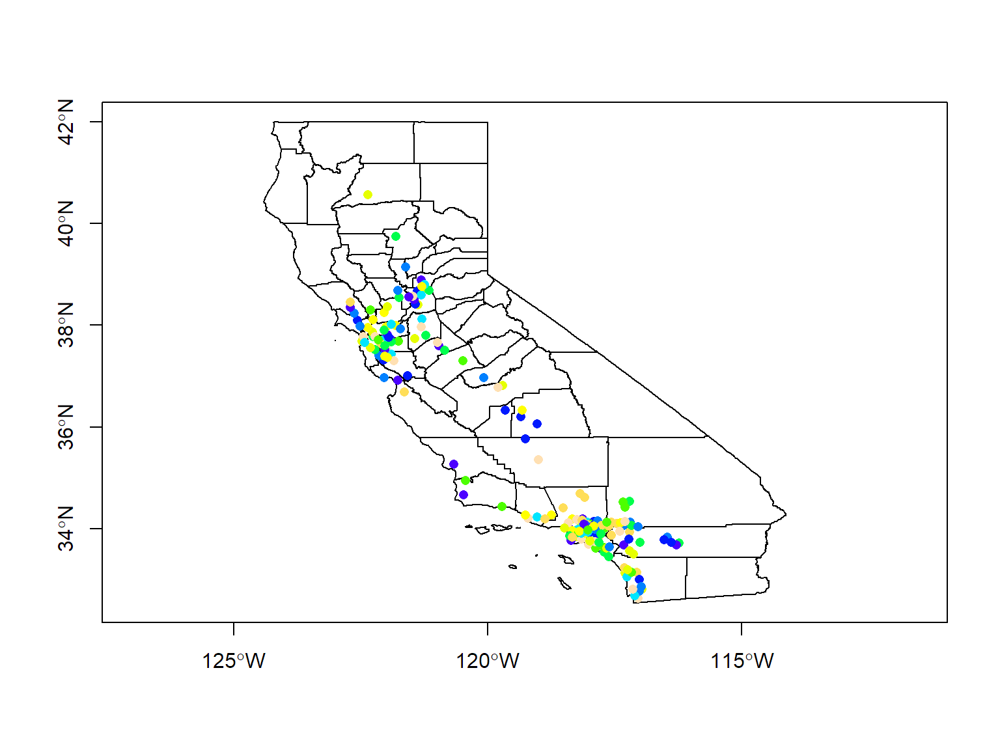
Spatial*DataFrame objects are designed to work as similarly as possible as regular data frames. This means you can reference columns the way you always do, use the [rows,cols] syntax to pull out selected rows, append two SPDF objects together using the rbind() function, get the number of rows with nrow(), etc.
The attached data frame is saved in the data slot, so you grab it using the @ operator, as in:
my_spatial_object@data
## Look at the names of the columns
names(ca_counties_ll@data)## [1] "STATEFP" "COUNTYFP" "LSAD" "ALAND" "AWATER"
## [6] "CountyFIPS" "CountyNAME" "POP2010" "POP2011" "POP2012"
## [11] "POP2013" "POP2014" "SQMI"Let's pull out one county and plot it. To perform an attribute query, you need to know the range of values.
ca_counties_ll@data$CountyNAME## [1] Stanislaus County San Francisco County Amador County
## [4] San Bernardino County Sierra County Siskiyou County
## [7] Plumas County San Luis Obispo County Modoc County
## [10] Colusa County Contra Costa County Ventura County
## [13] Orange County Yolo County Fresno County
## [16] Lake County Nevada County Los Angeles County
## [19] Monterey County Sutter County Kern County
## [22] San Diego County Mono County San Benito County
## [25] Imperial County Lassen County Placer County
## [28] Shasta County Riverside County Sacramento County
## [31] Santa Barbara County San Mateo County Santa Cruz County
## [34] Santa Clara County Solano County San Joaquin County
## [37] Alameda County Tuolumne County Glenn County
## [40] Humboldt County Merced County Tehama County
## [43] Mendocino County Sonoma County Mariposa County
## [46] Tulare County Marin County Trinity County
## [49] Alpine County Kings County Inyo County
## [52] Calaveras County Madera County El Dorado County
## [55] Butte County Napa County Yuba County
## [58] Del Norte County
## 58 Levels: Alameda County Alpine County Amador County ... Yuba CountyTo grab just one county, we can use [square bracket notation] with an expression in the rows position.
sanMateoCtyLL <- ca_counties_ll[ca_counties_ll@data$CountyNAME=="San Mateo County",]
summary(sanMateoCtyLL)## Object of class SpatialPolygonsDataFrame
## Coordinates:
## min max
## x -122.52085 -122.10871
## y 37.10732 37.70843
## Is projected: FALSE
## proj4string :
## [+proj=longlat +datum=WGS84 +ellps=WGS84 +towgs84=0,0,0]
## Data attributes:
## STATEFP COUNTYFP LSAD ALAND AWATER CountyFIPS
## 06:1 081 :1 22:1 1161506629 :1 757561040:1 06081 :1
## 001 :0 10140841147:0 104154637:0 06001 :0
## 003 :0 10510365728:0 105325735:0 06003 :0
## 005 :0 10817387422:0 112770970:0 06005 :0
## 007 :0 10895213672:0 119060126:0 06007 :0
## 009 :0 1152967527 :0 123929658:0 06009 :0
## (Other):0 (Other) :0 (Other) :0 (Other):0
## CountyNAME POP2010 POP2011 POP2012 POP2013
## San Mateo County:1 719951 :1 729425 :1 740738 :1 750489 :1
## Alameda County :0 1052894:0 1066587:0 1079358:0 10053995:0
## Alpine County :0 1158 :0 1111 :0 1127 :0 1095980 :0
## Amador County :0 135022 :0 135250 :0 134680 :0 1150 :0
## Butte County :0 136829 :0 13712 :0 13495 :0 13444 :0
## Calaveras County:0 13755 :0 138056 :0 139135 :0 134620 :0
## (Other) :0 (Other):0 (Other):0 (Other):0 (Other) :0
## POP2014 SQMI
## 758581 :1 Min. :448.5
## 10116705:0 1st Qu.:448.5
## 1111339 :0 Median :448.5
## 1116 :0 Mean :448.5
## 13170 :0 3rd Qu.:448.5
## 134809 :0 Max. :448.5
## (Other) :0plot(sanMateoCtyLL, axes=TRUE, asp=1, main="San Mateo", col=gray(0.8))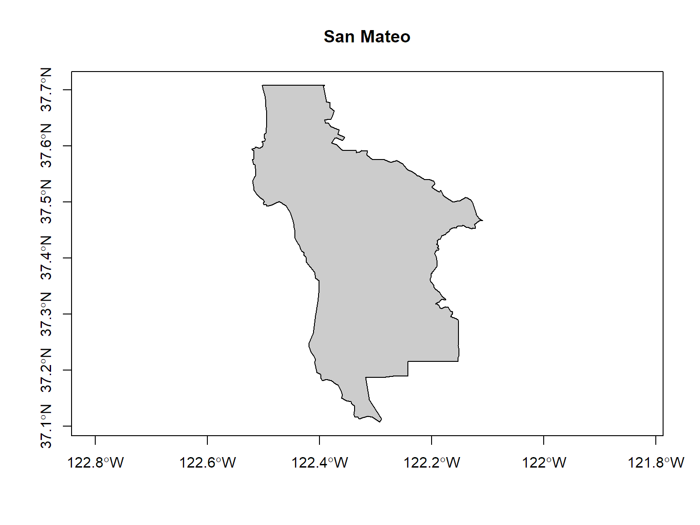
With a similar technique, we can randomly select five counties:
idx <- sample(1:nrow(ca_counties@data), size=5, replace = FALSE)
idx## [1] 1 15 41 55 34plot(ca_counties, axes=TRUE, asp=1)
plot(ca_counties[idx,], col=palette(), add=TRUE)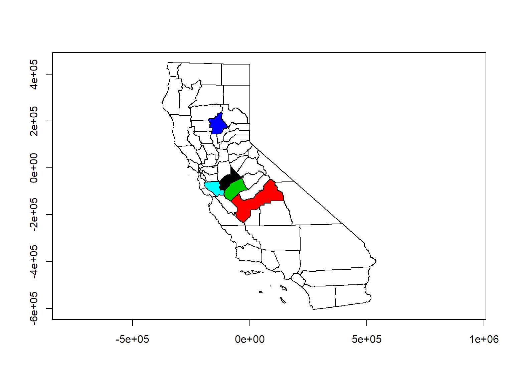
Sometimes you need to get the coordinates of the features in a SpatialPoints object 'back' as a simple matrix, so you can do something else with them (such as compute distances). The sp package has a function coordinates() which does exactly this.
x <- coordinates(ca_citiesSP)
head(x)## long lat
## 3 -122.26 37.77
## 10 -118.13 34.08
## 11 -117.73 33.57
## 15 -118.13 34.19
## 20 -117.87 33.84
## 27 -121.80 37.99There are times when you want to get rid of the data frame, in otherwords convert a SpatialPointsDataFrame object into a simply SpatialPoints object. The geometry() function will do this for you. It will also work on SpatialLines* and SpatialPolygons* objects.
x <- geometry(ca_citiesSPDF)
class(x)## [1] "SpatialPoints"
## attr(,"package")
## [1] "sp"library(rgdal)
rgdal::ogrDrivers()[,c(2,3,4)]## long_name write copy
## 1 Aeronav FAA FALSE FALSE
## 2 AmigoCloud TRUE FALSE
## 3 Arc/Info Generate FALSE FALSE
## 4 Arc/Info Binary Coverage FALSE FALSE
## 5 Arc/Info E00 (ASCII) Coverage FALSE FALSE
## 6 Atlas BNA TRUE FALSE
## 7 AutoCAD Driver FALSE FALSE
## 8 Carto TRUE FALSE
## 9 Cloudant / CouchDB TRUE FALSE
## 10 CouchDB / GeoCouch TRUE FALSE
## 11 Comma Separated Value (.csv) TRUE FALSE
## 12 OGC CSW (Catalog Service for the Web) FALSE FALSE
## 13 Microstation DGN TRUE FALSE
## 14 AutoCAD DXF TRUE FALSE
## 15 French EDIGEO exchange format FALSE FALSE
## 16 Elastic Search TRUE FALSE
## 17 ESRI Shapefile TRUE FALSE
## 18 Geoconcept TRUE FALSE
## 19 GeoJSON TRUE FALSE
## 20 Geomedia .mdb FALSE FALSE
## 21 GeoRSS TRUE FALSE
## 22 Google Fusion Tables TRUE FALSE
## 23 Geography Markup Language (GML) TRUE FALSE
## 24 GeoPackage TRUE TRUE
## 25 GPSBabel TRUE FALSE
## 26 GPSTrackMaker TRUE FALSE
## 27 GPX TRUE FALSE
## 28 Hydrographic Transfer Vector FALSE FALSE
## 29 HTTP Fetching Wrapper FALSE FALSE
## 30 Idrisi Vector (.vct) FALSE FALSE
## 31 OpenJUMP JML TRUE FALSE
## 32 JPEG-2000 driver based on OpenJPEG library FALSE TRUE
## 33 JPEG-2000 part 1 (ISO/IEC 15444-1), based on Jasper library FALSE TRUE
## 34 Keyhole Markup Language (KML) TRUE FALSE
## 35 MapInfo File TRUE FALSE
## 36 Memory TRUE FALSE
## 37 Microsoft SQL Server Spatial Database TRUE FALSE
## 38 MySQL TRUE FALSE
## 39 Network Common Data Format TRUE TRUE
## 40 ODBC TRUE FALSE
## 41 Open Document/ LibreOffice / OpenOffice Spreadsheet TRUE FALSE
## 42 GMT ASCII Vectors (.gmt) TRUE FALSE
## 43 Planetary Data Systems TABLE FALSE FALSE
## 44 SDTS FALSE FALSE
## 45 VRT - Virtual Datasource FALSE FALSE
## 46 OpenAir FALSE FALSE
## 47 ESRI FileGDB FALSE FALSE
## 48 OpenStreetMap XML and PBF FALSE FALSE
## 49 PCIDSK Database File TRUE FALSE
## 50 Geospatial PDF TRUE TRUE
## 51 PostgreSQL SQL dump TRUE FALSE
## 52 ESRI Personal GeoDatabase FALSE FALSE
## 53 Planet Labs Scenes API FALSE FALSE
## 54 PostgreSQL/PostGIS TRUE FALSE
## 55 EPIInfo .REC FALSE FALSE
## 56 IHO S-57 (ENC) TRUE FALSE
## 57 SEG-P1 / UKOOA P1/90 FALSE FALSE
## 58 SEG-Y FALSE FALSE
## 59 Selafin TRUE FALSE
## 60 SQLite / Spatialite TRUE FALSE
## 61 Tim Newport-Peace's Special Use Airspace Format FALSE FALSE
## 62 Scalable Vector Graphics FALSE FALSE
## 63 Storage and eXchange Format FALSE FALSE
## 64 U.S. Census TIGER/Line TRUE FALSE
## 65 UK .NTF FALSE FALSE
## 66 VDV-451/VDV-452/INTREST Data Format TRUE FALSE
## 67 Czech Cadastral Exchange Data Format FALSE FALSE
## 68 Walk FALSE FALSE
## 69 WAsP .map format TRUE FALSE
## 70 OGC WFS (Web Feature Service) FALSE FALSE
## 71 MS Excel format FALSE FALSE
## 72 MS Office Open XML spreadsheet TRUE FALSE
## 73 X-Plane/Flightgear aeronautical data FALSE FALSElibrary(sp)
library(rgdal)View layers in a directory:
library(rgdal)
rgdal::ogrListLayers(dsn)Where dsn is a directory.
rgdal::ogrListLayers("./data")## [1] "ca_counties_census"
## attr(,"driver")
## [1] "ESRI Shapefile"
## attr(,"nlayers")
## [1] 1View metadata before importing:
rgdal::ogrInfo(dsn, shape_file_name)where shape_file_name is the name of the directory, minus the .shp extension
To import, use readOGR()
ca_counties_alb <- rgdal::readOGR("./data", "ca_counties_census")## OGR data source with driver: ESRI Shapefile
## Source: "C:\Workshops\R-Spatial\SFOpenData\sfdata\docs\data", layer: "ca_counties_census"
## with 58 features
## It has 13 fields
## Integer64 fields read as strings: ALAND AWATER POP2010 POP2011 POP2012 POP2013 POP2014## Warning in rgdal::readOGR("./data", "ca_counties_census"): Z-dimension
## discardedsummary(ca_counties_alb)## Object of class SpatialPolygonsDataFrame
## Coordinates:
## min max
## x -373976.1 540037.5
## y -604512.6 450022.5
## Is projected: TRUE
## proj4string :
## [+proj=aea +lat_1=34 +lat_2=40.5 +lat_0=0 +lon_0=-120 +x_0=0
## +y_0=-4000000 +datum=NAD83 +units=m +no_defs +ellps=GRS80
## +towgs84=0,0,0]
## Data attributes:
## STATEFP COUNTYFP LSAD ALAND AWATER
## 06:58 001 : 1 22:58 10140841147: 1 104154637 : 1
## 003 : 1 10510365728: 1 105325735 : 1
## 005 : 1 10817387422: 1 112770970 : 1
## 007 : 1 10895213672: 1 119060126 : 1
## 009 : 1 1152967527 : 1 123929658 : 1
## 011 : 1 1161506629 : 1 1254256517: 1
## (Other):52 (Other) :52 (Other) :52
## CountyFIPS CountyNAME POP2010 POP2011 POP2012
## 06001 : 1 Alameda County : 1 1052894: 1 1066587: 1 1079358: 1
## 06003 : 1 Alpine County : 1 1158 : 1 1111 : 1 1127 : 1
## 06005 : 1 Amador County : 1 135022 : 1 135250 : 1 134680 : 1
## 06007 : 1 Butte County : 1 136829 : 1 13712 : 1 13495 : 1
## 06009 : 1 Calaveras County: 1 13755 : 1 138056 : 1 139135 : 1
## 06011 : 1 Colusa County : 1 1421838: 1 1435601: 1 14306 : 1
## (Other):52 (Other) :52 (Other):52 (Other):52 (Other):52
## POP2013 POP2014 SQMI
## 10053995: 1 10116705: 1 Min. : 46.89
## 1095980 : 1 1111339 : 1 1st Qu.: 959.57
## 1150 : 1 1116 : 1 Median : 1535.18
## 13444 : 1 13170 : 1 Mean : 2685.97
## 134620 : 1 134809 : 1 3rd Qu.: 3454.45
## 14016 : 1 13997 : 1 Max. :20057.04
## (Other) :52 (Other) :52kml_fn <- "./data/berkeley_public_sites.kml"
file.exists(kml_fn)## [1] TRUErgdal::ogrListLayers(kml_fn)## [1] "Public Facilities"
## attr(,"driver")
## [1] "KML"
## attr(,"nlayers")
## [1] 1brk_sites <- rgdal::readOGR(kml_fn, "Public Facilities")## OGR data source with driver: KML
## Source: "C:\Workshops\R-Spatial\SFOpenData\sfdata\docs\data\berkeley_public_sites.kml", layer: "Public Facilities"
## with 47 features
## It has 2 fieldssummary(brk_sites)## Object of class SpatialPointsDataFrame
## Coordinates:
## min max
## coords.x1 -122.29471 -122.24275
## coords.x2 37.85132 37.90184
## coords.x3 0.00000 0.00000
## Is projected: FALSE
## proj4string :
## [+proj=longlat +datum=WGS84 +no_defs +ellps=WGS84 +towgs84=0,0,0]
## Number of points: 47
## Data attributes:
## Name Description
## Alta Bates Medical Center : 1 :47
## Berkeley City Hall : 1
## Berkeley High School : 1
## Berkeley Public Library : 1
## Berkeley Seventh Day Adventist Church: 1
## Burbank Junior High School : 1
## (Other) :41rgdal can import from a file geodatabase also. In this case, the source is the name of a directory.
gdb_dir <- "./data/sf_crime.gdb"
file.exists(gdb_dir)## [1] TRUEsfcrime_sp <- rgdal::readOGR(dsn=gdb_dir,layer="San_Francisco_Crimes")## OGR data source with driver: OpenFileGDB
## Source: "C:\Workshops\R-Spatial\SFOpenData\sfdata\docs\data\sf_crime.gdb", layer: "San_Francisco_Crimes"
## with 74760 features
## It has 10 fieldsclass(sfcrime_sp)## [1] "SpatialPointsDataFrame"
## attr(,"package")
## [1] "sp"names(sfcrime_sp@data)## [1] "Field1" "Dates" "Category" "Descript" "DayOfWeek"
## [6] "PdDistrict" "Resolution" "Address" "X" "Y"plot(sfcrime_sp, pch=16, cex=0.4, axes=T, asp=1)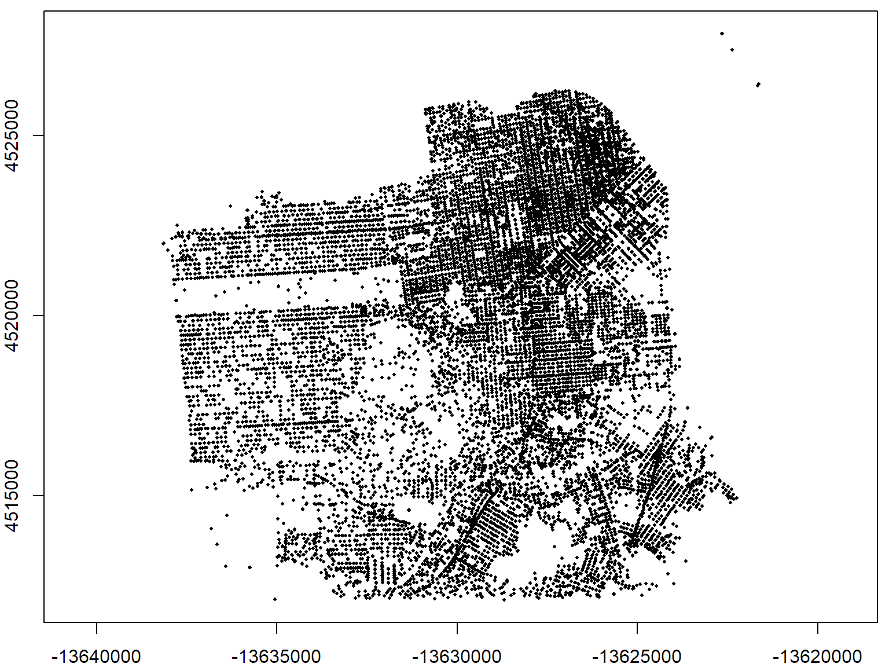
To determine if you can export as well as import a specific file format, look at the OGR driver info by running ogrDrivers().
subset(ogrDrivers(), grepl("ESRI", name))## name long_name write copy isVector
## 17 ESRI Shapefile ESRI Shapefile TRUE FALSE TRUEsubset(ogrDrivers(), grepl("KML", name))## name long_name write copy isVector
## 34 KML Keyhole Markup Language (KML) TRUE FALSE TRUEsubset(ogrDrivers(), grepl("GDB", name))## name long_name write copy isVector
## 47 OpenFileGDB ESRI FileGDB FALSE FALSE TRUE